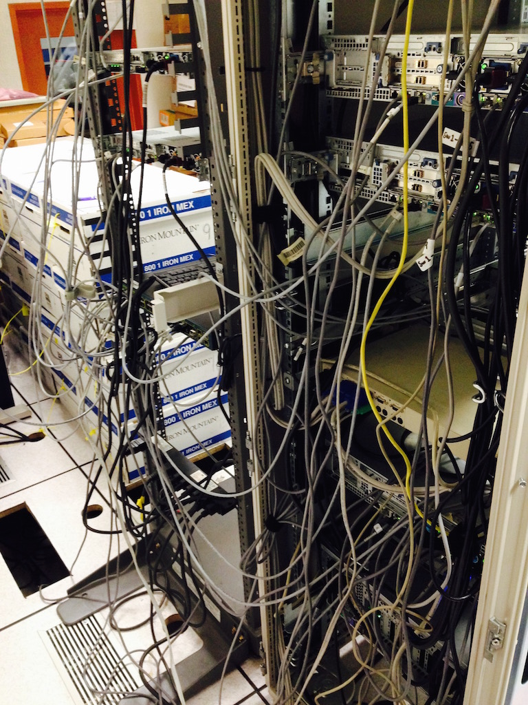
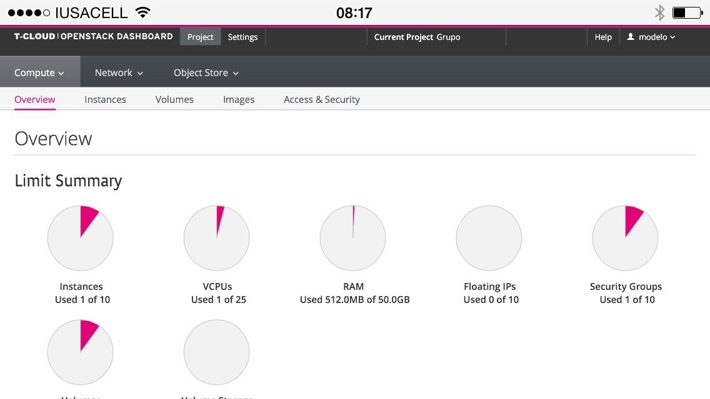
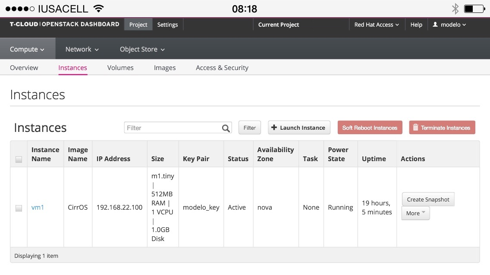
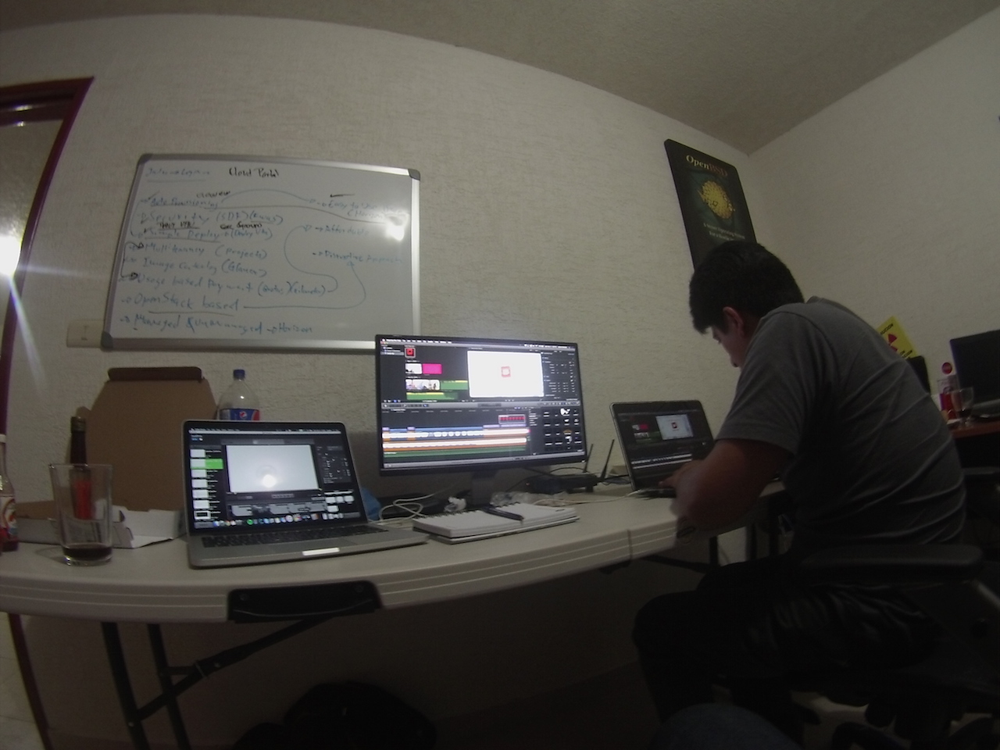
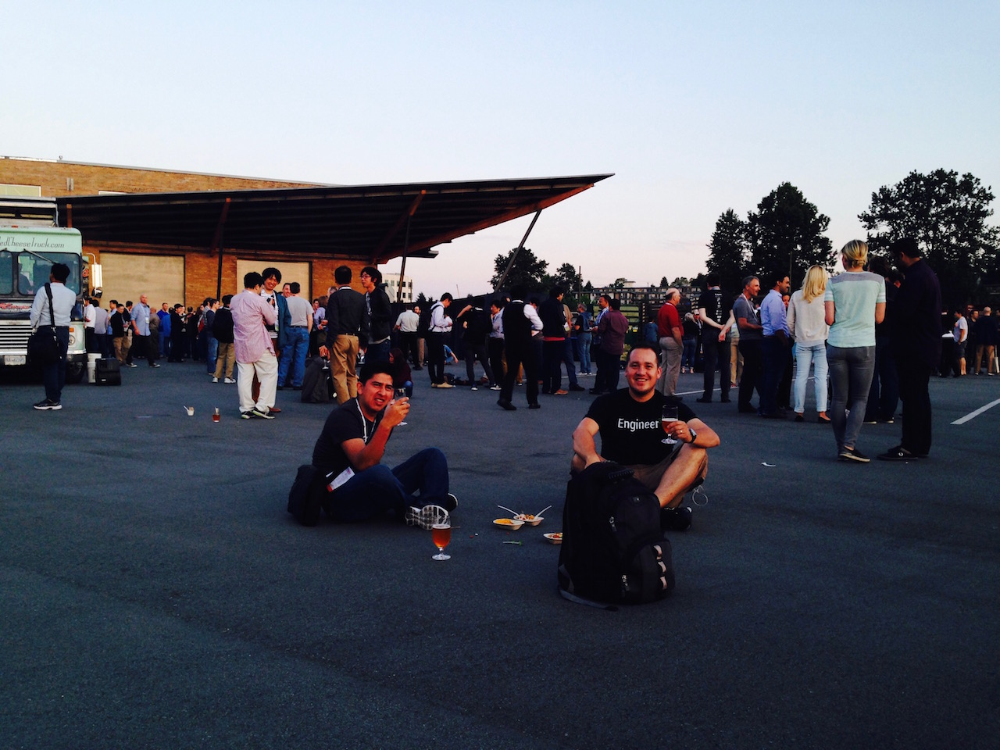
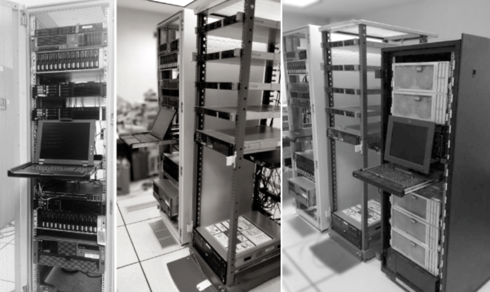

How I learned OpenStack by failing...
Demotivation of Inovation
Last night having a beer with my friend Arturo Ochoa we were talking about what really motivates you to innovate and/or create something that help fixing problems.
We were not sure what is all about,
but we felt same way, when you are doing it, you always think whatever you are implementing it does really suck, ..maybe not creating something new, your skills are not enough, etc. etc
But the reality is that maybe nobody is doing anything about it, and find yourself as the only one with you poor skills trying to do something different.
We tent to underestimate our efforts in a really bad way, and maybe that stop us going to the next level...
I'd like to share my story, how I learnt by doing and I'll say trying to simplifying things and solving existing problems using OpenStack as a platform.
Back in 2013 on my former employer I had plenty of time due I got some storage skills on my position, as a Sr Storage Engineer at that time being. Not too much automated stuff but enough to give me time to learn something else.
Bash, Perl, ssh-keys and one big xls file involved here :)
I started testing Openstack (Grizzly) and Eucaliptus on my own laptop but didn't work at all.
I heard some guys from the same company but in Slovakia, were trying to connect Netapp as backend storage on an OpenStack test cloud. - I offered my help but I got rejected.
So I continued on my self learning pace.
One of my previous managers wanted a solution to store files on the internal network, I offered him some help and he
gave me 3 very old servers and one disk array. Just for the records - never finished what he really wanted.
Managed to build one server from 3 I got, a very old Proliant G4 with 12GB of RAM and 2 CPUs at 2.4GHz, and a Disk array with 5 failed disks of 12, and suddenly Nazgul01 was born.
I felt like I have something here
Got access to the electronic Junk and trash, hardware listed to be donated by my previous employer.
In the meantime annoyed my co-workers with really noise old and dusty hardware from the cracks.
For some reason big companies tent to underestimate a "barrio bajo" guy with roedor skills, to find usable hardware
So one idiot from networking team, throw to the trash a Cisco Catalyst switch, I took it, test it, configured and failed configuring it like ten times, the idiot was not longer an idiot, and I realized something was wrong with the switch. my intern number 2 managed to rebuilt the OS for me, and it worked very nicely supporting jumbo frames... so intern wins, and I was just another idiot.
Also from the trash, found 4xG5 Proliants, lead to built 3 "decents" servers using the parts of those 4.
I felt, invincible.. and dusty
Realized I needed some extra help, my Linux skills were not as good as I thought anymore, due I spent a lot of time playing with a SAN appliance.
So I sent an email to my friend Ramon Morales, if he would like to join me, and I got an email from him five minutes later with a " let's fucking do it! " or something like that.
We spent several days trying to Install Openstack in 3 nodes not even configure it.
One month mark passed and we started to think this Openstack thing was a myth because we failed and failed
and.......failed.
So we started to read manuals....
Like two months later, we were able to spin up our first instance running CirrOS.
and Booooom an inovation explosion just happened.
We felt unstopable
We can even were able to launch virtual instances from a mobile phone, using a VPN, see images below.
 We have had a lot of ideas, we learnt as we use it, that platform was awesome... with a lot of patches and networking hacks but awesome,
none of us managed vmware previously, also we didn't understand the disadvantages against vmware at that time.
I attended a meeting with the Innovation department, excited and wanted to show them our little monster.
When a big company has a solution for years, and sell that solution in millions of dollars,
and always have been successful, everything is running flawlessly..
Why other platform that was buggy, without support, complex, and SAP is not certifiying your crap could have place in this company?
Basically that was the output from that meeting...
You can be really demoralized after a meeting like that, but sometimes I'm stubborn as fuck...
At the end of October 2014, We ended up releasing our very first buggy version of OpenStack based on Juno. CATRINA was born..
We offered some instances for Trial & Demo, -Hey free virtual instances with no internet access for free!
None, nadie, nobody...
Some sort of support
Francisco Fuentes from the management, saw something on our idea, and supported us with four more servers, that we can use on our little monster as compute nodes,
Then Fuentes joined SAP team as the new manager, and suggested them to use our platform for learning SAP porpuses.
We started serving cloud services for SAP, with the power of OpenStack, very easy and fast, performance was really good,
nobody complained they never thought their instances were running on a test platform managed from some linux hippies.
We ran SAP Business Object, SAP Solman, SAP W-something, and believe or not SAP HANA.
Our next releases were
-
TYRION - A clever version with automated bootstrapping, and PXE.
-
MUTANT Using CEPH with a crappy disk array built from the junk as well, but it was running great.
And we started to make some noise back then,
We got a meeting with some of the high level managers, we showed them our monster, and... we didn't meet their expectactions by far.
They were thinking on an enhanced version of VMware, and we failed to explained them in a non technical way why we think this technology could help the company saving money and time.
They said we need a TCO, Bussines Cases and so on, ...again believe or not, we built a TCO and a BC with our poor financial skills, even a freaking promotional video.
But for some reason it wasn't not enough, here are the results
OpenStack Summit in Vancouver 2015 - Cloud or die.
So we took our savings, booked the cheapest hotel we found in Vancouver downtown, bought flight tickets, got Canadian VISA approved, and boooom we were in Canada with no support from our employer.
We learnt a lot about new concepts, new technologies, we met interesting and smart people, we had fun, and even Ramon got the OpenStack certification by Redhat, I tried but failed.. again :) , just fun so we realized after that trip, this is the new thing, not Openstack but Cloud and containers revolution.
Spread the word!
We were invited to gave some talks on universities, ITESM, BUAP, Universidad Veracruzana, and we organized a SysAdminDay in our company.
By the end of 2015 one year later of Catrina creation,
We were considered by the management to attend the OPENTELEKOM Cloud technical talk in Budapest, Hungary. (we no longer use our own money to pay for beers on that trip) ,
OTC is a Deustche Telekom initiative to build a public cloud based on OpenStack to offer in the European Market.
Also taking advantage of the long trip we had the opportunity to show a demo in Frankfurt, Germany, to some of the Senior Cloud engineers, pretty much how we managed to run OpenStack as an Enterprise private cloud, supporting all SAP toys, SAP HANA, Big Data with Hadoop, our progress with OpenStack + VMWare, and Docker.
we were able to launch a Hadoop cluster in just a few minutes, as I described on a previous post Big Data as a Service , that was by the end of the 2015.

We went back to Mexico with a good feedback from Germany and Hungary, and we were proud of what we have achieved so far, but not enough for us.
We always asked ourselfs
Why as a company, as a country, we need to wait the innovation from USA, Europe or Asia? and not step up first, even when you have the resources and the customers....
So this OpenStack lab built from the junk, in less than two years took us to three different countries and a new continent for us.
We were wrong in so many levels, and failed to explain to the management our vision, perhaps.
The only thing we were not wrong, was about to learn new things and have fun by doing it, push our own limits, and do not underestimate what we built, at the end, no one else was doing it on our small environment.
